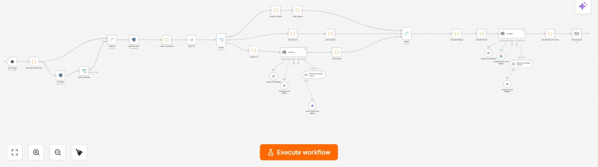

AI Automation Assessment
An interactive assessment system designed to identify automation opportunities across different industries by analyzing how a business operates, scoring its current level of automation, and generating a personalized automation report.
01Overview
The AI Automation Assessment is an interactive system built to help businesses discover where automation can be applied to their existing processes. The assessment supports multiple industries, including Real Estate, Healthcare / Clinics, Restaurants & Cafés, E-commerce / Retail, Marketing / Advertising, Professional Services, Education / Training, Construction, Manufacturing, Logistics and Other.
Each industry has its own set of technical questions designed to cover important business processes. The assessment combines multiple-choice scoring with open-ended questions that let the respondent describe their real workflow, recurring tasks and day-to-day operations in their own words.
After submission, the workflow evaluates the answers, calculates an overall automation result and sends a personalized report to the email address provided by the respondent.
02Business problem
Many businesses know that they spend time on repetitive manual work, but they do not always know which processes are suitable for automation or where to start.
The assessment was designed as an automated discovery layer: instead of requiring an initial manual consultation, a business can describe how it works, receive an assessment of its current automation level, and see concrete areas where automation could potentially reduce repetitive work, time and cost.
03Architecture
04Workflow

05Assessment design
- Industry-specific questions: each selected industry has a dedicated question set designed around its typical business processes.
- Multiple-choice scoring: the structured questions are scored directly according to the defined answer values.
- Open-ended discovery: additional questions allow the respondent to explain what they do, how their day works and which tasks repeat most often.
- Custom responses: respondents can use an “Other” path when the predefined options do not describe their business accurately.
- Combined evaluation: the final result combines the deterministic score from structured answers with the AI evaluation of the open-ended responses.
06AI components
- Score Agent for Essay Questions: analyzes the respondent's free-text answers according to the defined system prompt and produces a score based on the information provided.
- Multiple model evaluation: the workflow uses different model paths including ChatGPT with Claude and ChatGPT with Gemini for the AI evaluation stages.
- Summarization Agent: receives the resulting scores and assessment data, then turns them into a readable report for the respondent.
- Automation recommendations: the generated report explains where automation opportunities may exist and what processes could be targeted.
- Answer-quality feedback: low-quality or insufficient answers can be reflected in the assessment output so the respondent understands that better process detail produces a more useful evaluation.
07Integrations
- Tally — assessment interface, industry selection and answer collection.
- n8n — end-to-end workflow orchestration, routing, scoring and delivery.
- PostgreSQL — persistence for assessment and processing data.
- OpenAI / ChatGPT — AI evaluation and reasoning stages.
- Anthropic / Claude — additional model path for evaluation.
- Google Gemini — additional model path used in the assessment workflow.
- Email delivery — sends the personalized assessment result to the respondent's submitted email address.
08Technical challenges
- Multi-industry branching: the assessment needs to change its evaluation context according to the selected industry rather than treating every business the same way.
- Mixed scoring: deterministic multiple-choice scoring has to be combined with an AI-generated score for open-ended answers.
- Unstructured answers: respondents can describe the same process in very different language, so the Score Agent needs a consistent evaluation framework.
- Low-quality input: the system has to distinguish useful process descriptions from answers that contain little actionable information.
- Report generation: raw scores are not enough; the final output needs to explain what the result means and translate it into potential automation opportunities.
09Reliability engineering
- Persistence: assessment data is stored in PostgreSQL as the workflow processes the submission.
- Normalization: incoming form data is normalized before it reaches downstream scoring stages.
- Structured scoring: defined scores for multiple-choice answers provide a deterministic component instead of relying entirely on an LLM.
- Structured AI output: AI scoring and summarization are handled as explicit workflow stages so their outputs can feed subsequent nodes.
- Separation of concerns: scoring open-ended answers and writing the final report are separated into different agents.
10Business impact
The system turns an initial business-process discovery step into an automated assessment experience: the respondent describes the business, the workflow evaluates the answers, and the resulting report highlights potential automation areas.
11Lessons learned
A useful automation assessment needs both structured data and room for the business owner to explain what actually happens inside the company. Multiple-choice questions make part of the evaluation deterministic, while open-ended answers give the AI enough context to understand processes that cannot be captured by predefined options alone.
12Future improvements
- Add an automated lead-priority score based on automation opportunity and estimated business value.
- Add a visual automation roadmap showing quick wins, medium-term automations and larger transformation opportunities.
- Store assessment history so businesses can retake the assessment and compare progress over time.
- Add industry-specific automation libraries that map common process patterns to ready-to-build workflows.
- Add confidence indicators for AI-generated scores and flag low-confidence assessments for human review.